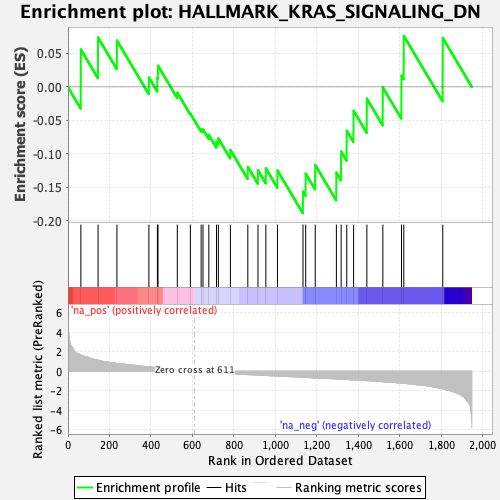

| | | Dataset | gsea_amp_ratios |
| Phenotype | NoPhenotypeAvailable |
| Upregulated in class | na_neg |
| GeneSet | HALLMARK_KRAS_SIGNALING_DN |
| Enrichment Score (ES) | -0.18833002 |
| Normalized Enrichment Score (NES) | -0.5974294 |
| Nominal p-value | 0.9661458 |
| FDR q-value | 1.0 |
| FWER p-Value | 1.0 |
Table: GSEA Results Summary

Fig 1: Enrichment plot: HALLMARK_KRAS_SIGNALING_DN
Profile of the Running ES Score & Positions of GeneSet Members on the Rank Ordered List
| SYMBOL | RANK IN GENE LIST | RANK METRIC SCORE | RUNNING ES | CORE ENRICHMENT | | 1 | SLC16A7 | 62 | 1.659 | 0.0558 | No |
| 2 | CALML5 | 145 | 1.139 | 0.0736 | No |
| 3 | TFAP2B | 236 | 0.800 | 0.0691 | No |
| 4 | TG | 390 | 0.463 | 0.0140 | No |
| 5 | LYPD3 | 431 | 0.378 | 0.0132 | No |
| 6 | TGM1 | 434 | 0.366 | 0.0316 | No |
| 7 | SPTBN2 | 527 | 0.148 | -0.0085 | No |
| 8 | MFSD6 | 590 | 0.019 | -0.0399 | No |
| 9 | ZBTB16 | 642 | -0.056 | -0.0635 | No |
| 10 | THNSL2 | 651 | -0.078 | -0.0635 | No |
| 11 | HSD11B2 | 679 | -0.111 | -0.0717 | No |
| 12 | LFNG | 716 | -0.161 | -0.0819 | No |
| 13 | TFCP2L1 | 725 | -0.172 | -0.0769 | No |
| 14 | SYNPO | 783 | -0.237 | -0.0940 | No |
| 15 | C5 | 867 | -0.338 | -0.1193 | No |
| 16 | EFHD1 | 916 | -0.375 | -0.1245 | No |
| 17 | STAG3 | 954 | -0.417 | -0.1216 | No |
| 18 | KRT15 | 1010 | -0.481 | -0.1247 | No |
| 19 | BTG2 | 1133 | -0.603 | -0.1563 | Yes |
| 20 | NR4A2 | 1146 | -0.625 | -0.1294 | Yes |
| 21 | ENTPD7 | 1192 | -0.683 | -0.1165 | Yes |
| 22 | PDK2 | 1294 | -0.778 | -0.1278 | Yes |
| 23 | IDUA | 1317 | -0.808 | -0.0964 | Yes |
| 24 | TENT5C | 1344 | -0.837 | -0.0655 | Yes |
| 25 | GP1BA | 1377 | -0.877 | -0.0356 | Yes |
| 26 | CNTFR | 1441 | -0.956 | -0.0176 | Yes |
| 27 | BARD1 | 1518 | -1.064 | -0.0007 | Yes |
| 28 | YBX2 | 1608 | -1.205 | 0.0169 | Yes |
| 29 | FGGY | 1619 | -1.213 | 0.0761 | Yes |
| 30 | CD207 | 1807 | -1.776 | 0.0730 | Yes |
Table: GSEA details [plain text format]
 Fig 2: HALLMARK_KRAS_SIGNALING_DN: Random ES distribution
Fig 2: HALLMARK_KRAS_SIGNALING_DN: Random ES distribution
Gene set null distribution of ES for HALLMARK_KRAS_SIGNALING_DN